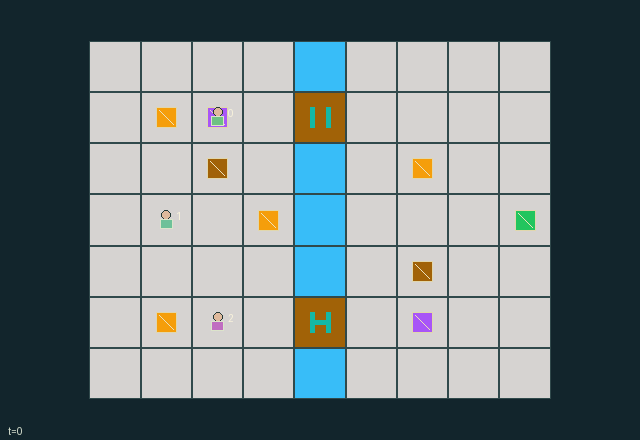

GI107 · Counterweight Crossing

Deliver all four evacuees and evacuate all three responders to the east shelter, preserving access while others cross.
Identity and original contract
3 independently actionable roles; 9 discrete commands per role; 109 native observation columns per role; original horizon 120 steps. Declared per-step reward range: -1 to 6. Observation regime: fully_observable.
Source SHA-256: 63b301253ce3f34f76e2c211b43aa64c3eb25074ced0ce39f27936f8fbfe06c1
The objective, rewards, population, map and horizon remain original. A preview is not a success claim.
Objective and gameplay
Deliver all four evacuees and evacuate all three responders to the east shelter, preserving access while others cross.
Agent and cargo mass on two physical plates chooses which bridge admits entry. A departing holder may close a partner's route. Transported ballast can replace a holder; temporary bracing spends energy and lasts different times by role.
- The river column can be crossed only at north and south bridge sites. Entry requires the bridge's recorded open flag.
- The heavier west plate opens the north bridge; the heavier east plate opens the south bridge. Equal loads close both unless braced.
- An agent weighs one, an evacuee one, and ballast two. Carried mass and dropped objects contribute at their actual positions.
- Carry at most one object. The porter moves ballast every tick; the escort moves evacuees every tick; other loaded workers move on even input ticks.
- Brace an adjacent bridge using one energy. The engineer holds it for three ticks, other workers for one. Waiting recovers energy.
- Bridge configurations update after movement, so lifting or leaving a plate changes the next tick's access. A closed span never crushes its occupant; exit remains possible.
- Deliver four evacuees, then each empty worker may evacuate at shelter. An evacuated worker cannot return to maintain a plate.
Ending: All four evacuees are delivered and all three responders have chosen self-evacuation. Horizon 120 otherwise truncates; natural completion has priority.
What this game explores
Joint transport & shared access: Positions, load geometry, occupancy and persistent access constrain whose action can succeed next. Distinguish physical handoff, shared controls and simultaneous force from a cosmetic cooperation label.
Team opposition & interception: Cooperation within a team can coexist with opposition between teams. Preserve team membership, capture and possession rules, and report each team's outcomes instead of assuming a single shared return.
Survival, protection & rescue: Protection and repair alter another role's future feasible actions. Record losses, exposure, rescue and infrastructure as well as delivery; survival is determined by the actual kernel.
These are questions supported by rule structure, not observed learning effects.
Play it: operating walkthrough
crucibles play --game gi107Keep Python running and open its printed address. Select this game, set a seed and press Create session. The game itself is always English.
Assign a role range to Host with Assign / take over, or Assign all roles. Invite a second participant with Create player invitation, then assign a disjoint subset. Every original role is available.
For every owned role choose a legal command and press Queue. Arrow keys / WASD queue a declared directional action for the current role camera when available. Space or Advance one joint step advances everyone together. Non-directional games use the selectors.
Unqueued roles use the labelled untrained uniform-legal policy. Take over or release roles before the next step without resetting. Full-state debug is privileged and permanently logged; role cameras preserve permissions. Close the session to retain logs. Server restart does not restore sessions.
Complete command reference
IDs and English labels exactly match the manifest. Availability depends on role, resources, location and phase. An available action can still have no productive effect.
0·wait and recover brace energy
1·north
2·east
3·south
4·west
5·pick up or put down evacuee; deliver at shelter
6·pick up or put down ballast
7·brace adjacent bridge
8·evacuate self at shelter if empty
Roles and capability identifiers
These original role names describe capabilities, not interchangeable skins. Check each owned role's legal selector before planning handoffs.
agent_0·bridge engineer
agent_1·ballast porter
agent_2·evacuation escort
Information and observation permissions
All world layout, bodies, cargo, plate loads, bridge states, brace energy, and progress are public. Each row additionally encodes own role. Inactive evacuated agents have only wait and do not obstruct movement or contribute mass.
The GIF is full-state debug and may reveal hidden entities or private state. Train on obs[agent], not the picture, state tree or another role's private row. Field slices and visibility are in the original manifest.
Reinforcement-learning integration
import jax
from crucibles_jaxmarl import make
env = make("gi107")
key = jax.random.PRNGKey(0)
key, rk, ak, sk = jax.random.split(key, 4)
obs, state = jax.jit(env.reset)(rk)
actions = env.sample_actions(ak, state)
obs, state, rewards, dones, info = jax.jit(env.step_env)(sk, state, actions)
done = dones["__all__"]Observations are float32 vectors of width 109; actions are scalar int32; masks have 9 entries. Supply all 3 roles each transition. Masked sampling is an engineering reference, not a trained learner.
step_env retains terminal data without reset. step performs outer autoreset and keeps terminal data in info["raw_state"] and info["raw_observation"]. Use dones["__all__"] for episode boundaries; separate completion, failure and time limit in analysis.
JIT or vmap equal identities and shapes. Split independent reset, policy and transition keys. Group different shapes explicitly; do not shrink the population or horizon. Host rendering stays outside training.
Training questions and fair evaluation
Define valid completion from the objective before fitting. Preserve original rewards and also report real deliveries/services, losses, resource state, unresolved episodes and per-role returns. Animation is not a reward signal.
Positions, load geometry, occupancy and persistent access constrain whose action can succeed next. Distinguish physical handoff, shared controls and simultaneous force from a cosmetic cooperation label.
Cooperation within a team can coexist with opposition between teams. Preserve team membership, capture and possession rules, and report each team's outcomes instead of assuming a single shared return.
Protection and repair alter another role's future feasible actions. Record losses, exposure, rescue and infrastructure as well as delivery; survival is determined by the actual kernel.
Compare memory, communication or centralized critics under matched actor information. Declare critic access; keep actor inputs role-filtered. Match partner/opponent distributions, masks, compute and checkpoint selection. Final tests never enter fitting or selection.
Independent training runs or source-pairing blocks are inferential units; episodes from one policy are not independent training replications. Save hashes, keys, versions, device, time and cost. Negative, zero, failed and indeterminate outcomes are valid. No trained checkpoint or target score is supplied.
Classification and evidence
Overlapping editorial labels are reading aids, not proof of novelty, difficulty, strategic equivalence or learning effects.
- Joint transport & shared access
- Evidence
manifest.task.objective: Deliver all four evacuees and evacuate all three responders to the east shelter, preserving access while others cross.
- Evidence
manifest.actions.5: pick up or put down evacuee; deliver at shelter
- Evidence
manifest.actions.7: brace adjacent bridge
- Team opposition & interception
- Evidence
scene.rules.0: The river column can be crossed only at north and south bridge sites. Entry requires the bridge's recorded open flag.
- Survival, protection & rescue
- Evidence
manifest.task.objective: Deliver all four evacuees and evacuate all three responders to the east shelter, preserving access while others cross.
- Evidence
manifest.actions.5: pick up or put down evacuee; deliver at shelter
- Evidence
manifest.actions.8: evacuate self at shelter if empty
Source, receipts and preview limits
The world-only English GIF replays saved untrained legal actions through the original kernel. At most 25 actual endpoints include initial and terminal state; no invented interpolation. It is full-state debug, not the role observation.
Original source, observation slices, manifest and mechanism
Native receipt · Presentation receipt
Engineering passes do not establish learning. Nonzero floating differences remain recorded and undetermined; no new tolerance was introduced. Human scores remain unverified.